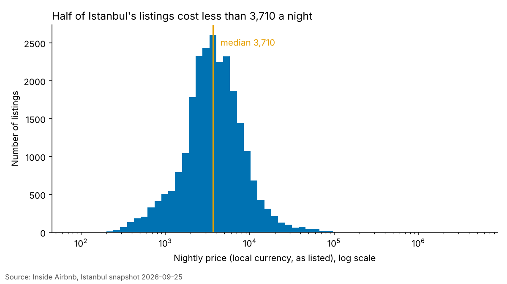
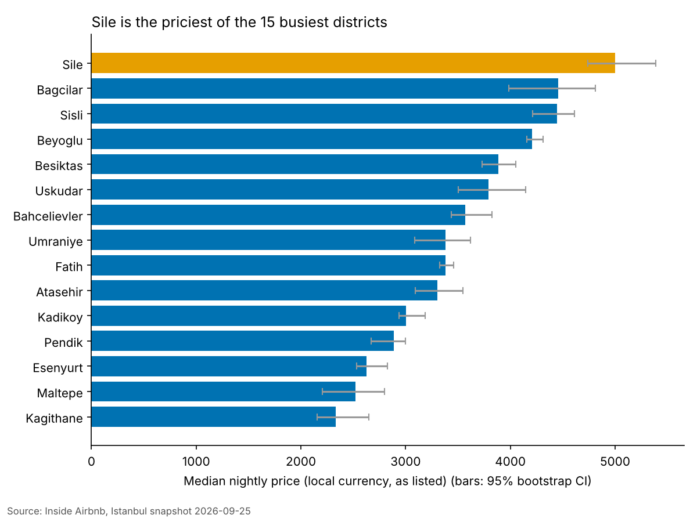
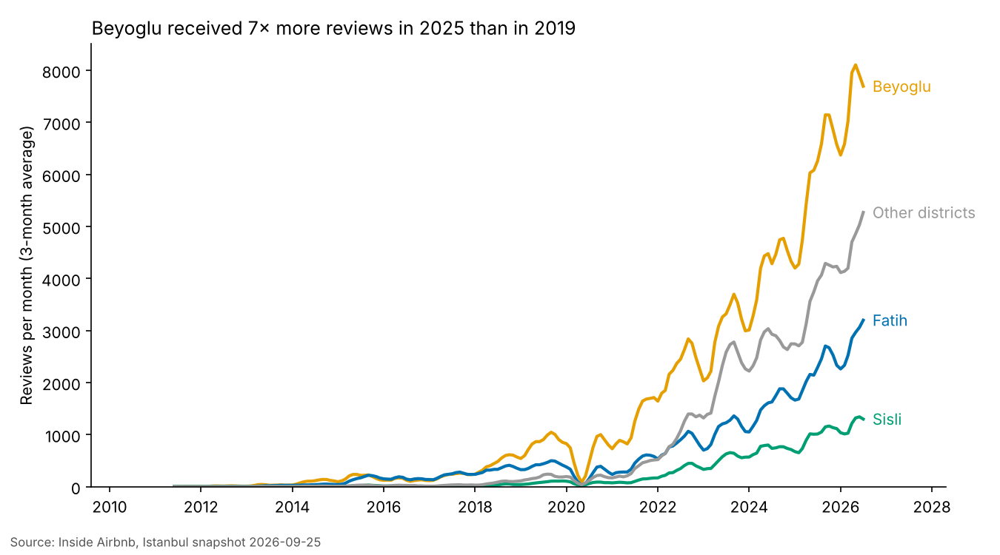
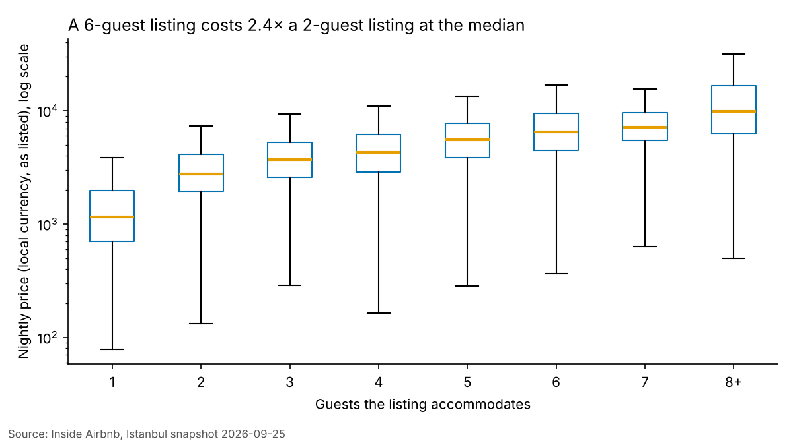

Why it matters
Airbnb has become an important part of Istanbul's accommodation market, but prices and rental activity are not equally distributed across the city. In this project, we analyze Airbnb listings, nightly prices, guest reviews, and accommodation capacity to understand how the market differs between districts. Our goal is to identify key patterns and explore the relationship between location, price, and rental activity.
We use the Inside Airbnb snapshot of Istanbul (25 September 2026: 27,232 listings, 624,804 reviews, 39 districts) to answer three questions:
- How do nightly prices differ across Istanbul's districts?
- Which districts concentrate the listings, and how has guest activity in them grown over time?
- How do districts differ in the kind of supply, and how is price related to listing size?
1. Prices across the districts


2. Where the listings and guests are

3. What kind of supply each district offers

Conclusion
Our analysis shows that Istanbul's Airbnb market varies considerably across districts. Nightly prices depend on factors such as location and accommodation capacity, while guest activity is concentrated in popular areas such as Beyoğlu. We also found that districts with more listings are not always more expensive. Overall, the results highlight the importance of considering multiple factors when comparing Airbnb markets across Istanbul.
Limitations and ethics
This analysis is based on publicly available Inside Airbnb data from September 25, 2026. Listed prices may not reflect actual booking prices, and reviews do not represent every guest stay. Some districts have relatively few listings, which can make their median prices less reliable. In addition, the dataset does not fully capture the social and economic effects of short-term rentals on local residents. Therefore, our findings should be interpreted as descriptive patterns rather than causal relationships.
Data and references
- Inside Airbnb, Istanbul. insideairbnb.com/get-the-data (CC BY 4.0)
- Code and data card: GitHub repository